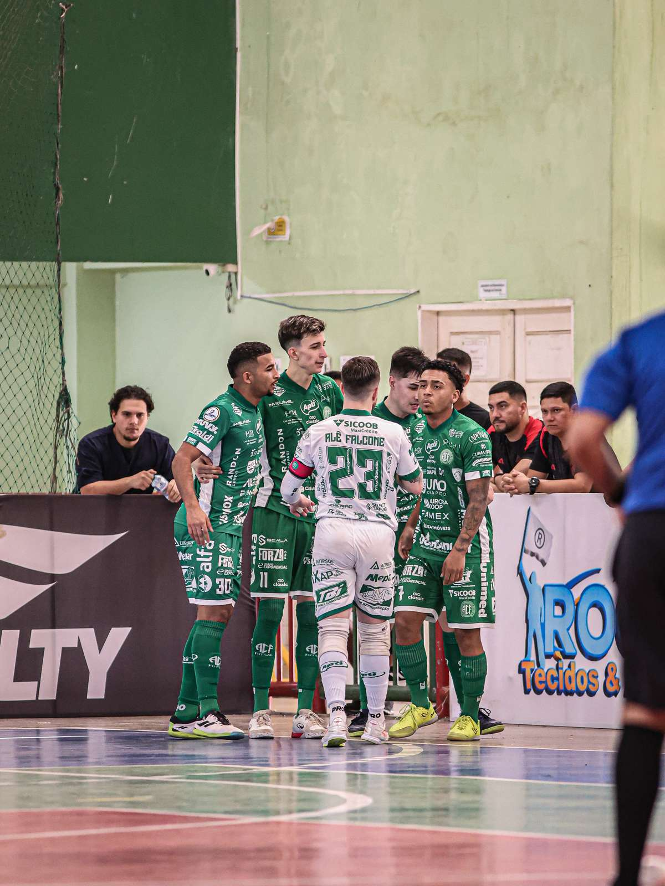
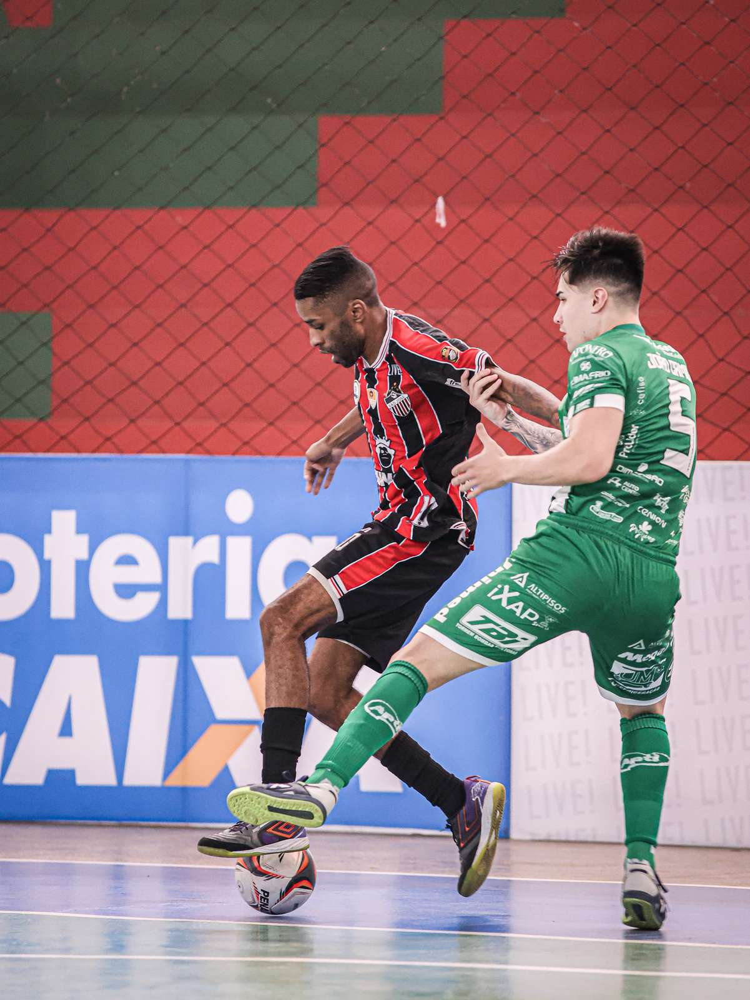
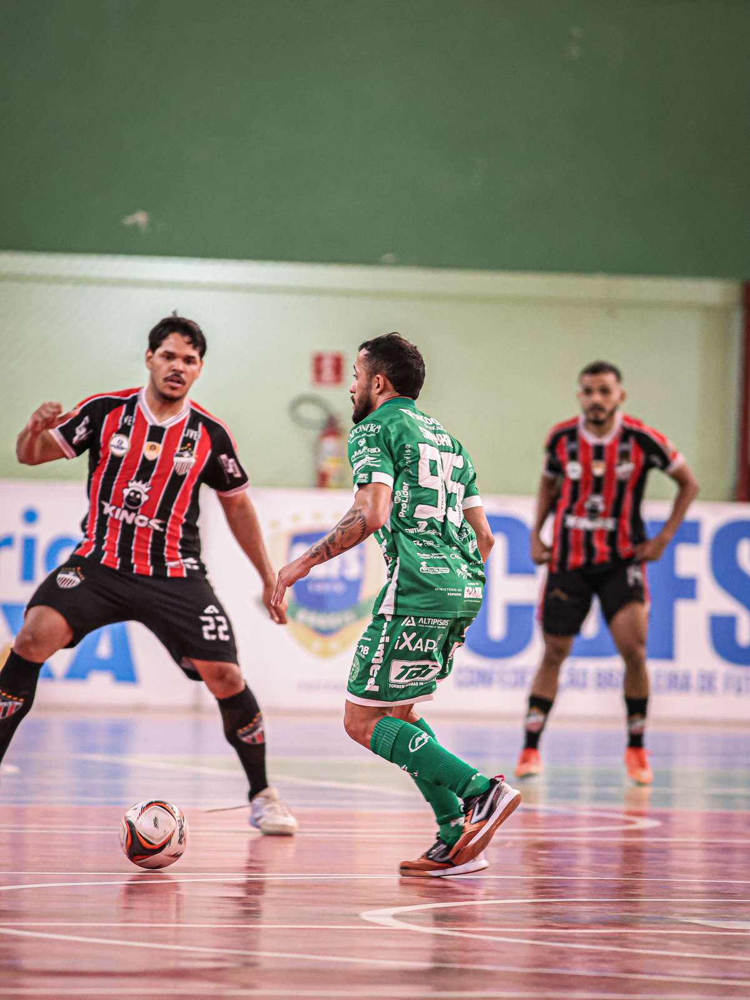

A Prefeitura de Chapecó/Chapecoense/Unochapecó jogou na manhã deste sábado (5), no ginásio do Instituto Federal do Amapá (IFAP), em Macapá (AP). O Verdão das Quadras acabou superado por 5 a 1 pelo São José, pela sexta rodada do Campeonato Brasileiro de Futsal.
O time do técnico Leo Schroeder tomou a iniciativa desde o início do jogo. A busca pelo gol foi premiada logo a 2'39", com o fixo João Camilo. A equipe do Oeste catarinense continuou atacando, mas o representante do Amapá foi eficiente nos contragolpes para virar. Vitinho empatou aos 3'34", Menor fez o segundo aos 10'54", Valdin ampliou aos 14'31" e Francielson marcou o quarto aos 18'21".

Na segunda etapa, a Chape Futsal partiu em busca da recuperação, mas quem voltou a balançar a rede foi o São José. Aos 9'19", Vinícius anotou o quinto dos anfitriões. O clube verde-branco apostou no goleiro-linha no decorrer do confronto, mas o placar não mudou.

A Chapecoense permanece na quinta colocação com nove pontos. O São José foi a seis pontos e subiu para o oitavo lugar, entrando na zona de classificação às quartas de final. O próximo desafio no Brasileiro será no dia 17 de setembro, diante do Atlético Piauiense, pela sétima rodada. A partida está marcada para as 20h, na Arena Verdão, em Teresina (PI).

Antes, a Chape Futsal terá dois duelos em Santa Catarina. Primeiramente, defenderá a liderança da Série Ouro do Catarinense diante do Tubarão na quinta-feira (10), às 19h30, pela 10ª rodada, no Sul do Estado. Depois, no dia 11 (sexta), encara o Rio do Sul, no Alto Vale do Itajaí, pela ida das quartas de final da Copa SC.
Crédito das fotos: @reisclicks Francisco Reis